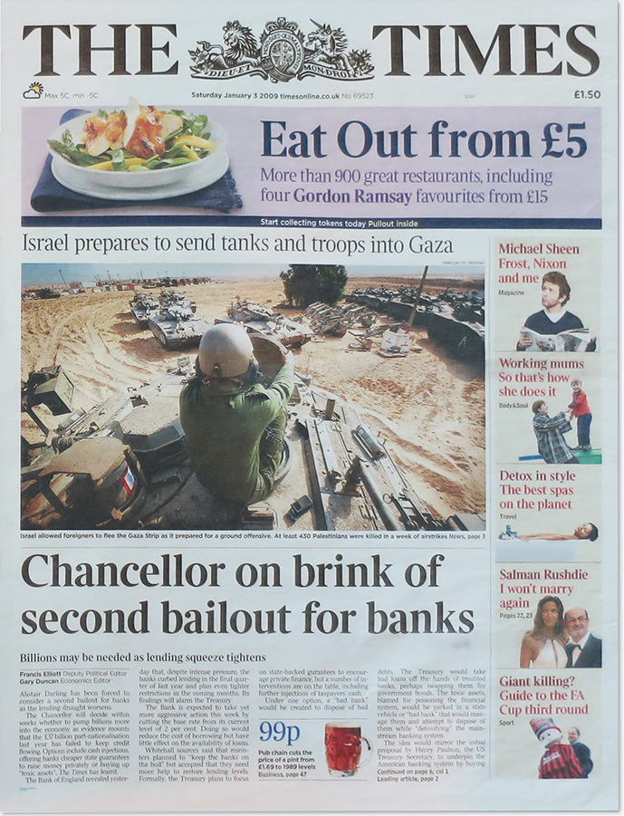

Version 1 was introduced in the genesis block (January 2009).
Version 2 was introduced in Bitcoin Core 0.7.0 (September 2012) as a soft fork. As described in BIP34, valid version 2 blocks require a block height parameter in the coinbase. Also described in BIP34 are rules for rejecting certain blocks; based on those rules, Bitcoin Core 0.7.0 and later versions began to reject version 2 blocks without the block height in coinbase at block height 224,412 (March 2013) and began to reject new version 1 blocks three weeks later at block height 227,930.
Version 3 blocks were introduced in Bitcoin Core 0.10.0 (February 2015) as a soft fork. When the fork reached full enforcement (July 2015), it required strict DER encoding of all ECDSA signatures in new blocks as described in BIP66. Transactions that do not use strict DER encoding had previously been non-standard since Bitcoin Core 0.8.0 (February 2012).
Version 4 blocks specified in BIP65 and introduced in Bitcoin Core 0.11.2 (November 2015) as a soft fork became active in December 2015. These blocks now support the new OP_CHECKLOCKTIMEVERIFY opcode described in that BIP.
(source)
For the next block, this is calculated by taking the block header, eg. the first 80 bytes of this block and performing a SHA-256 hash twice. This results in
0x6fe28c0ab6f1b372c1a6a246ae63f74f931e8365e15a089c68d6190000000000which can be found in the previous block field of the next block. This makes it a chain of blocks.
The double hash is a protection against length extension attack.
The benefit of having a merkle tree is that you don't need all the transaction IDs to prove a single transaction.
Bitcoin is designed to mine a block on average every 10 minutes, due to a self-balancing difficulty.
An arbitrary number miners change to modify the header hash in order to produce a hash less than or equal to the target threshold.
This is the last part of the 80-byte header.
Chancellor on brink of second bailout for banks
Billions may be needed as lending squeeze tightens
Francis Elliott Deputy Political EditorGary Duncan Economics Editor
 Alistair Darling has been forced to consider a second bailout for banks as the lending drought worsens.
The Chancellor will decide within weeks whether to pump billions more into the economy as evidence mounts that the £37 billion part-nationalisation last year has failed to keep credit flowing. Options include cash injections, offering banks cheaper state guarantees to raise money privately or buying up “toxic assets”, The Times has learnt.
The Bank of England revealed yesterday that, despite intense pressure, the banks curbed lending in the final quarter of last year and plan even lighter restrictions in the coming months. Its findings will alarm the Treasury.
The Bank is expected to take yet more aggressive action this week by cutting the base rate from its current level of 2 per cent. Doing so would reduce the cost of borrowing but have little effect on the availability of loans.
Whitehall sources said that ministers planned to “keep the banks on the boil” but accepted that they need more help to restore lending levels. Formally, the Treasury plans to focus on state-backed gurantees to encourage private finance, but a number of interventions are on the table, including further injections of taxpayers’ cash.
Under one option, a “bad bank” would be created to dispose of bad debts. The Treasury would take bad loans off the hands of troubled banks, perhaps swapping them for government bonds. The toxic assets, blamed for poisoning the financial system, would be parked in a state vehicle or “bad bank” that would manage them and attempt to dispose of them while “detoxifying” the mainstream banking system.
The idea would mirror the initial proposal by Henry Paulson, the US Treasury Secretary, to underpin the American banking system by buying up toxic assets. The idea was abandoned, ironically, when Mr Paulson decided to follow Britain’s plan of injecting cash directly into troubled banks.
Mr Darling, Gordon Brown and Lord Mandelson, the Business Secretary, are expected to take the final decision on what extra help to give the banks by the end of the month.
The banks have taken much of the heat for the economy’s woes. But ministers are said increasingly to accept that attacking the banks will not by itself transform a situation that is jeopardising Britain’s economic prospects.
Insiders point out that Mr Darling’s criticism of mortgage lenders has softened in recent weeks.
After the Bank of England’s radical cuts in interest rates over the past two months, the focus at the Treasury has shifted away from mortgage lending to the pressure being put on businesses by the scarcity of loans, which is emerging as the bigger economic danger.
Richard Lambert, the Director-General of the CBI, said yesterday: “The Government is going to have to do more to restore credit flows across the economy.”
He said that the car industry was especially vulnerable: “Without access to credit or loan guarantees on commercial terms, this vital part of the economy will incur lasting damage.”
The scale of the lending drought was highlighted as separate Bank figures showed that the number of new home loans approved plunged to a record lose in November. Only 27,000 mortgages for house purchase were approved by banks and building societies, down from a revised 31,000 in October. It is the lowest level since the Bank began collecting data in 1999. The Bank’s quarterly credit conditions survey showed that banks restricted access to loans of all kinds by companies and consumers in the past quarter, and that they plan to tighten the screws more in this quarter.
Halifax reported that the price of the average house fell by more than £100 a day last year. Its quarterly figures showed that the average house ended the year down in price by £37,178, or 162 per cent.
Pressing their point
“The single most pressing challenge to economic policy is to get the banking system to get lending in any normal sense”Mervyn King, Governor of the Bank of England, Nov 26
“They are close to cutting off their noses to spite their faces”
Lord Mandelson, Business Secretary, accuses the banks of being too conservative, Nov 30
“The banks have to understand that we have put substantial sums of public money in to support them. They, in turn, need to play their part”
Alistair Darling, Dec 10
“Quite clearly a lot more needs to be done”
Alistair Darling, Dec 15
Every 210000 blocks, the miner subsidy is cut in half (the halving). After 33 halvings there is no more miner subsidy, and the transaction fees pay for the mining expenditure and the security of the network.
When all the halvings are done, there have been 20999999.97690000 bitcoin mined, thus 2310000 satoshis short of 21 million.
The 21 million is actually not in the code. The subsidy per block is derived the starting value of 50 BTC per block, and divide that block subsidy by 2 for every 210000 blocks.
int64 CBlock::GetBlockValue(int64 nFees) const
{
int64 nSubsidy = 50 * COIN;
// Subsidy is cut in half every 4 years
nSubsidy >>= (nBestHeight / 210000);
return nSubsidy + nFees;
}
The lower limit on the size of a transaction (the dust limit) is 546 satoshis. However, for the coinbase transaction (the mining subsidy), this limit is not applicable.
To get to an actual address this data has to be hashed, first with SHA256 and then with RIPEMD160. This results in a hash160 of:
62e907b15cbf27d5425399ebf6f0fb50ebb88f18By encoding this to Base58, the following address is found:
1A1zP1eP5QGefi2DMPTfTL5SLmv7DivfNa